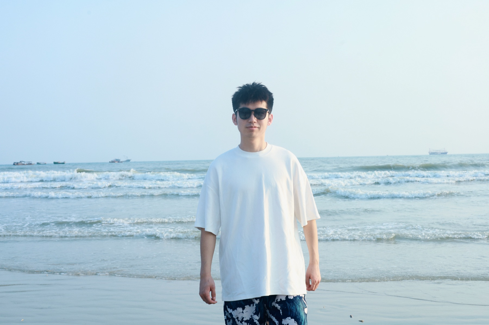

面向在广州工作、创业、求学和生活的河南老乡，建立稳定、友善、可信的沟通入口。
我们的定位
让河南老乡在广州找得到人、说得上话、办得成事。
组织节日聚会、城市徒步、亲子活动、创业交流、公益探访和返乡联谊。
提供找工作、找客户、找场地、找同乡、法律与生活咨询等信息互通渠道。
河南特色
把中原文化带到广州，把广州机会带回乡亲。
厚重与开阔
以黄河文化的包容、坚韧和向心力，凝聚在穗河南人的共同身份。
自强与担当
把敢闯敢拼、守信重义的精神，变成异乡创业和互助行动。
烟火与团圆
胡辣汤、烩面、蒸面条和家乡味，是老乡活动里最直接的亲近感。
文化与传承
洛阳、开封、郑州、安阳等城市记忆，成为广州河南人的精神底色。
乡情历史
从中原到岭南，河南人在广州写下自己的城市篇章。
广州也有“河南”一说
广州本地旧称里的“河南”，常指珠江以南的海珠一带；本网站所说的河南老乡，则指来自河南省、在广州生活发展的群体。
南下广州，寻找机会
随着珠三角制造业、商贸业和服务业快速发展，许多河南人来到广州就业创业，在批发市场、餐饮、物流、文化传媒、建筑、教育等领域扎根。
从打拼者到建设者
越来越多河南老乡在广州成家立业，也开始以商会、同乡会、公益组织和线上社群的方式互相照应，把个人奋斗连成社区力量。
从认识一个人，到链接一座城
新一代河南人在广州不只寻找工作，也在建立品牌、组织社群、参与公益、推动合作。乡情不只是回忆，更是信任、资源与行动。
在广州的河南人
他们来到广州，也把河南人的实在、韧劲和热情带到广州。
早期足迹
广州一直是中国南方重要的商贸城市。许多河南人顺着改革开放后的城市机会南下，在市场、工厂、档口、物流、餐饮和工程项目中站稳脚跟。最初是一张车票、一个行李包、一位熟人介绍，后来变成家庭落脚、事业扩展、朋友相帮。
行业聚合
在广州，河南老乡分布在批发贸易、直播电商、餐饮供应链、建筑装饰、教育培训、文化传媒、汽车服务、服装皮具、美业健康等领域。大家靠勤奋起步，也靠口碑建立长期合作。
乡情互助
老乡会的意义，是让初来广州的人少一点陌生，让已经扎根的人多一点连接。一次饭局、一次资源分享、一场节日聚会，都可能成为事业合作、生活支持和城市归属感的开始。
影像墙
珠江、黄河、城市烟火和老乡面孔，连成一条共同的路。

活动计划
老乡聚起来，城市就不陌生。
每月第二个周六
河南老乡茶话会
新老朋友见面、行业互换名片、分享广州生活经验。
端午 / 中秋 / 春节前
节日联谊活动
一起包饺子、吃家乡菜、听豫剧片段、给在穗家庭一个团圆场。
不定期
创业与就业互助
发布岗位、项目合作、门店资源、法律咨询和创业经验。
季度公益
老乡公益行动
探访困难老乡、组织公益捐助、参与城市志愿服务。
加入我们
留下联系方式，下一场活动通知你。
目前表单是网页展示版。正式上线时，可以接入腾讯问卷、金数据、飞书表单或微信二维码，免写代码收集报名。
社群主理
让每一次相聚，都成为新的连接。
以开放、稳重、可信的方式组织老乡活动，让在广州奋斗的河南人既能找到乡音，也能找到机会。